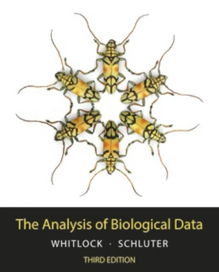
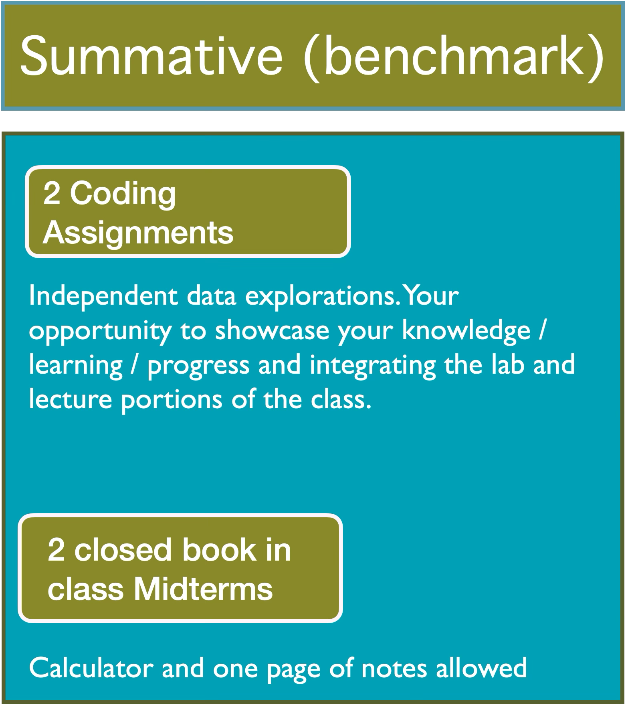

0.Logistics
Bárbara D. Bitarello
2025-09-02
Overview
- Introductions
- Course Logistics
- To-Dos for this week
Hello!
- Bárbara D. Bitarello (she/her/hers)
- PhD in human evolutionary genetics
- Professor \@ BMC since July 2021
- Computational biologist/population geneticist/evolutionary biologist/statistical geneticist, etc
- Interested in all things related to evolution
Our TA
Nicole Cavalieri
English Major/ Data Science Minor
R rockstar!
Pre-Reqs
- No prior experience with programming is required!
- BIOL B110 or B111 highly recommended (though not required). Why? Examples are heavily focused on biology, though the concepts and skills learned will be transferable
- Students who have taken PSYC B205/H200 or SOCL B265 are not eligible to take this course.
- High school algebra - if you’re not sure, I recommend checking Khan Academy - Algebra Basics for a recap
Logistics
Everything I am about to say is in the syllabus!
- Materials
- Things to do/install
- Course structure
- Policies
- How to succeed
Materials
- Textbook: Whitlock and Schluter The Analysis of Biological Data, 3rd edition (2nd: ok, but check pages)

- Laptop with browser for labs
- Scientific calculator (not graphing calculator) \(\sim\$12\)
- Scientific vs Graphing Calculator
Tech things to do
- Have a laptop for labs and calculator for exams
- Join Piazza
- Make accounts in DataCamp and Posit Cloud using BMC/HC email
- Then accept invite sent by email (check spam)
Other things to do
- Read course info document and schedule (posted on Moodle)
- Answer pre-course survey
- Check course schedule and reach out asap if there are issues
- Check midterm dates and plan accordingly
Course Pages
- Course website: https://bbitarello.github.io/b215f2025/ has syllabus, schedule, etc.
- All assignments must be uploaded on Moodle (except DataCamp)
- Keys, slides, study guides will also be posted on Moodle
Course Pages
- Piazza is the preferred method for any questions that may benefit classmates, both logistical and content-related
- Piazza allows you to post anonymously (note: I will still know your identity)
Course Structure

Formative vs Summative Assessments
Formative Assessments
- Formative assessments happen often and are focused on learning
- DC and R labs are gladed for completion/effort
- Quizzes may be taken multiple times (final grade is average)
- PS graded benevolently
- Allows instructor to adjust pace and support
Summative Assessments
- Evaluate students’ individual progress: have they met the learning goals? Have they mastered the material?
- Typically occur at the end of a learning period
- The first coding assignment will actually be formative and you will be allowed to resubmit; the 2nd will be summative

DataCamp
- Assigned weekly to practice lab skills
- DC shows the hard deadlines but ideally you should complete the weekly DC activities as they are assigned, weekly
Attendance and Late Work
- Please communicate need to miss class by email.
- Grace days: every one gets 4, no questions asked, just email a day before deadline and say how many days you need for a given assignment
- Late work otherwise penalyzed -10% per day
AI policy
We are following the BMC Honor Code. Please see syllabus.
Questions about this: now or later on Piazza.
FAQs answered in the syllabus
Please visit the FAQ section of the syllabus. A few examples…
- What if I have to miss class?
- What if I cannot turn in an assignment in time?
- What if I am requesting an extension because of sickness?
- What if I have accommodations?
How to succeed
- Attendance
- Pre-class prep
- Complete all activities — be consistent and diligent
- Check Piazza regularly, attend office hours at least 2x
- Don’t leave everything for last minute — that will not work well
- Communicate proactively
Questions?
B21: Biostatistics with R